San Martín de los Andes
San Martín de los Andes
Recientemente hemos adquirido un nuevo resonador magnético Siemens 1.5T Sempra 2021. Este equipo de última generación, permitirá una mayor calidad de imágenes y nuevas modalidades diagnosticas a disposición de nuestros pacientes.
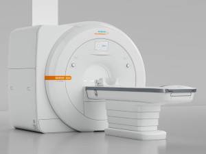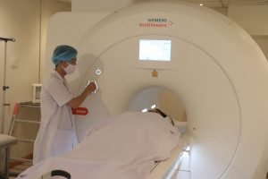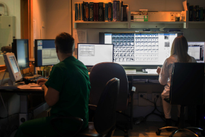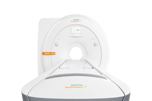Desde hace mas de 20 años somos pioneros en innovación tecnológica, con equipamiento de vanguardia, puesto al servicio de la región. Ahora ya no es necesario pasar a retirar su estudio; se lo enviamos por e-mail como un acceso desde el cual puede simplemente descargarlo en su computadora personal o reenviarlo a su médico y en el momento que lo requiera retirarlo en formato físico. Sin embargo lo que más valoramos y nos esforzamos en conservar a través del tiempo, es la calidez y profesionalismo del equipo humano del que nos sentimos orgullosos de formar parte.
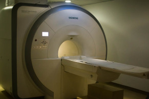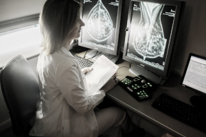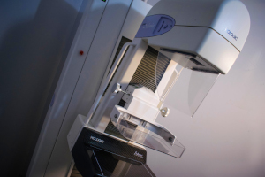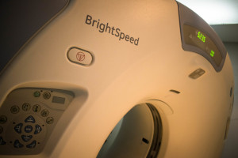Nuestra área quirúrgica esta localizada en la calle Misionero Mascardi 955, en un ambiente distendido e intimo. El paciente que debe someterse a una intervención quirúrgica recibe en esta área todo el asesoramiento profesional y administrativo que requiera. Cuenta con un quirófano donde se realizan cirugías programadas, una sala de procedimientos videoendoscópicos con tecnología HD, un sector dedicado a quimioterapia e internación breve y un área de internación y recuperación de 8 camas. En el área de internación de mas de 24 hs., contamos con el mejor confort y seguridad para los pacientes.
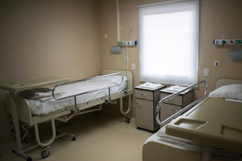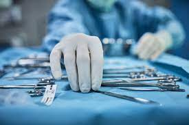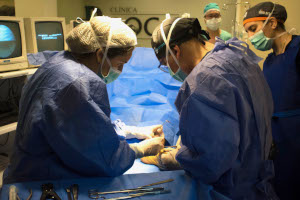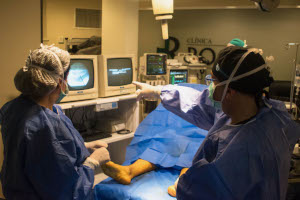Contamos con una amplia gama de especialidades para que realice sus consultas, durante las mismas, el profesional tendrá a su disposición los estudios de diagnóstico por imágenes, informes y resultados de laboratorio realizados en el Centro Médico Roca y/o área quirúrgica.
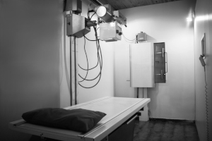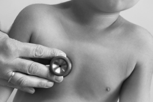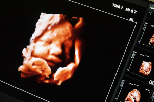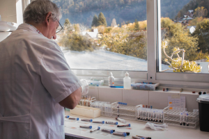